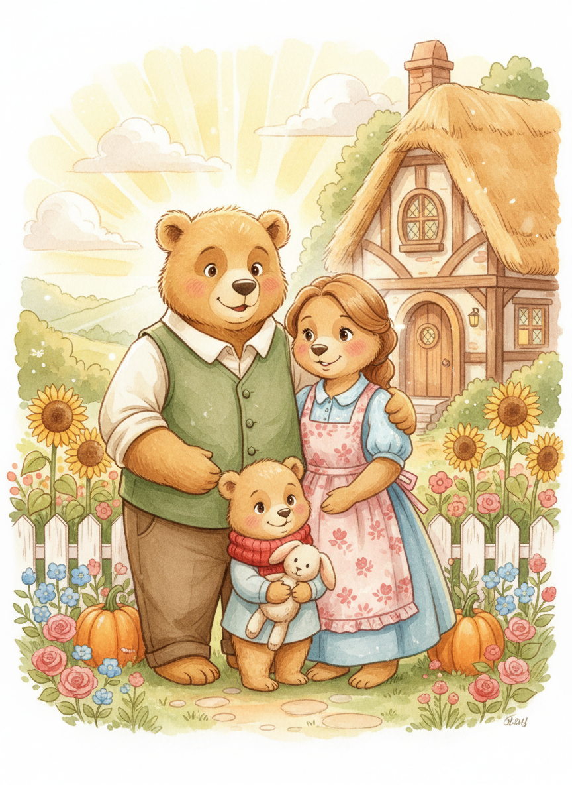

Once Upon a Time
Once upon a time, in a cozy little cottage tucked deep within an enchanted forest, there lived three bears. There was great big Papa Bear, whose voice rumbled like gentle thunder. There was middle-sized Mama Bear, whose voice was warm as honey. And there was wee little Baby Bear, whose voice was as small and sweet as a tinkling bell.
They were the happiest family in all the woodland, and every creature in the forest — from the tiniest field mouse to the wisest old owl — loved them dearly.
Their cottage had round windows that glowed like lanterns at dusk, a garden bursting with sunflowers, and a chimney that always trailed the most delicious smells into the treetops above.
